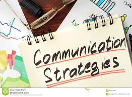

Being an entrepreneur means being able to communicate with your employees, your shareholders, your customers, the list goes on… Here are a few tips to communicate effectively.
Being an entrepreneur is more than just coming up with a great idea. It’s more than simply putting that idea to practice, too. As an entrepreneur, you more than likely are going to spend 99% of your time working with others to bring your ideas to life. If you can’t communicate your thoughts and ideas to anyone else, well, unless your business plan calls for a one-person show, you’re out of luck.
Communication is a critical skill for all entrepreneurs. Even the best idea will never grow if the person who came up with it can’t communicate it effectively. Communication doesn’t just mean talking, either. There are many skills within the subset of communication, from body language to writing to negotiation, which are all critical to success as an entrepreneur.

7 Entrepreneur Communication Skills to Master:-
Communication Skills of an Entrepreneur Tips:-
1. Listening
Listening? You might be confused, but a good listener is on the fast track to becoming an excellent communicator. Entrepreneurs are often so caught up in their own brilliant ideas that they don’t stop to hear the thoughts of those around them. It’s a recipe for disaster.
Try to always focus on the person speaking to you and be sure you can summarize what they said in your own mind before you choose to respond and build on the conversation further. Good listening skills will allow you to serve your clients and manage your employees more effectively, because you’ll be able to identify and respond to their concerns and thoughts.
2. Conversing
Conversation is one of the most basic forms of communication, but because of that, it’s also the foundation for almost every interaction you’ll have as an entrepreneur. Basic conversations with your employees will build trust overtime, and they also can help you realize issues before they blow up and become serious. Meanwhile, a chat on the subway with a stranger just might become a sales opportunity.
If you can learn to speak in a friendly way (listening goes a long way here), you’ll be able to apply it to tons of situations, from sales pitches to conflict resolutions and more.
3. Conflict Management
Conflict management is one of the key parts of being an entrepreneur. Many managers spend nearly half their day dealing with conflicts. It might be between two employees who hold different opinions about their work or responsibilities, or it might be two of your vendors who had some sort of lapse in communication.
In all cases, the trick is acknowledging both sides. Put yourselves in the shoes of each individual and figure out why they’re upset and what their point is. If you can’t understand both sides, you can’t resolve the issue. Come from a central ground and give each side their fair due.
Also, if you want to resolve conflicts successfully, you need to learn how to push back productively when an employee is in the wrong. That said, make sure any and all pushback is polite and productive, while remaining non-personal. A good plan is to focus on clarity at all times in conflict management. If you can communicate your thoughts clearly and concisely, it makes it a lot easier for people to listen and understand where you’re coming from.
4. Body Language
Much of communication is nonverbal, so mastering your body language is extremely important. Also, if you’re good with body language, you’ll learn to understand your employees and clients much better just from watching their body language. Posture is extremely critical. Sit or stand straight, keep your shoulders back, and hold your head high. ALWAYS look people in the eye and avoid fidgeting. Keep your hands out of your pockets, as well.
These are mere basic techniques, and there are dozens upon dozens more. Becoming a body language expert is a great way to master communication subtly, because most people won’t even realize what you’re doing, but YOU will.
5. Presenting
As an entrepreneur, presenting will have to be your bread and butter. You might be presenting your financials to investors, presenting your services to a client, presenting your business to a buyer, or something else. Even presenting the ideas behind entrepreneurship at an event or convention of sorts may be something in your calendar one day.
Be clear, be concise, and remain poised at all times. Avoid talking too fast and avoid interjections like “um” at all costs. Good body language, like we talked about above, is critical when presenting. If you can present well, you’ll excel in a variety of settings, so work on your presentation skills today!
6. Writing
You don’t have to be the next Hemingway or Faulkner, but you do need to learn how to write concisely, communicating your thoughts in written form as simply and clearly as possible. Email is probably the most common form of communication in the modern business world. Texting and Slack messaging aren’t far behind. You MUST be able to communicate your thoughts clearly via the written word and avoid misinterpretation as much as possible. Being a skilled writer is a great way to become a superb manager and an effective entrepreneur.
7. Communication Platforms
One of the most important communication skills entrepreneurs need to adopt and perfect is their ability to effectively use communication technology platforms. Communication technologies, especially in the form of video and chats have exploded in the past couple of years. Popular platforms like Zoom, Webex Meetings, Slack, and Google Chat shoot all be given special attention.
And with many businesses increasing their remoteness, the entrepreneurs who can adapt to become masterful at employing these various forms of communication platforms will have an advantage. So, be sure you double down on these important communication technology platforms, and you’ll be a much more effective communicator.
Final Thoughts
In almost every undertaking have a strong grasp on communication skills will benefit you immensely. And when you are in business for yourself, it becomes imperative for the sake of your enterprise, that these communication skills are mastered.
With that being said, we hope this list of entrepreneur communication skills serves you well. May it give you a starting point for mastering the art of communicating, and a leg up in mastering your enterprise.
~Pratap Pawar